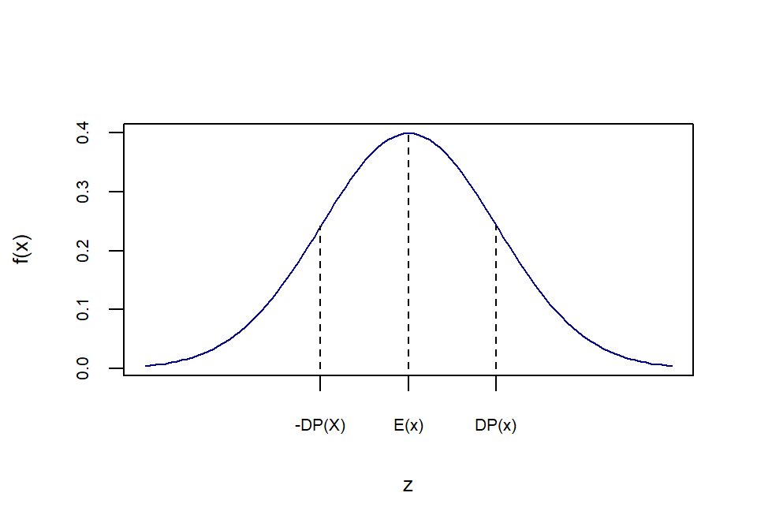

rm(list = ls(all.names = TRUE)) #will clear all objects includes hidden objects.
x<-seq(-3,3,0.1)
fdnorm<-dnorm(x = x, mean = 0, sd=1)
fdanorm<-pnorm(q = x, mean = 0, sd=1)
curve(dnorm(x,0,1),xlim=c(-3,3),main='',xaxt="n",xlab="z", ylab="f(x)",
col="darkblue",cex.axis=0.65, cex.lab=0.8)
axis(1,at=c(-1, 0, 1),labels =
c("-DP(X)","E(x)","DP(x)"),cex.axis=0.65, cex.lab=0.8)
lines(x=c(0,0),y=c(0,fdnorm[x==0]),lty=2, col="black")
lines(x=c(1,1),y=c(0,fdnorm[x==1]),lty=2, col="black")
lines(x=c(-1,-1),y=c(0,fdnorm[x==-1]),lty=2, col="black")